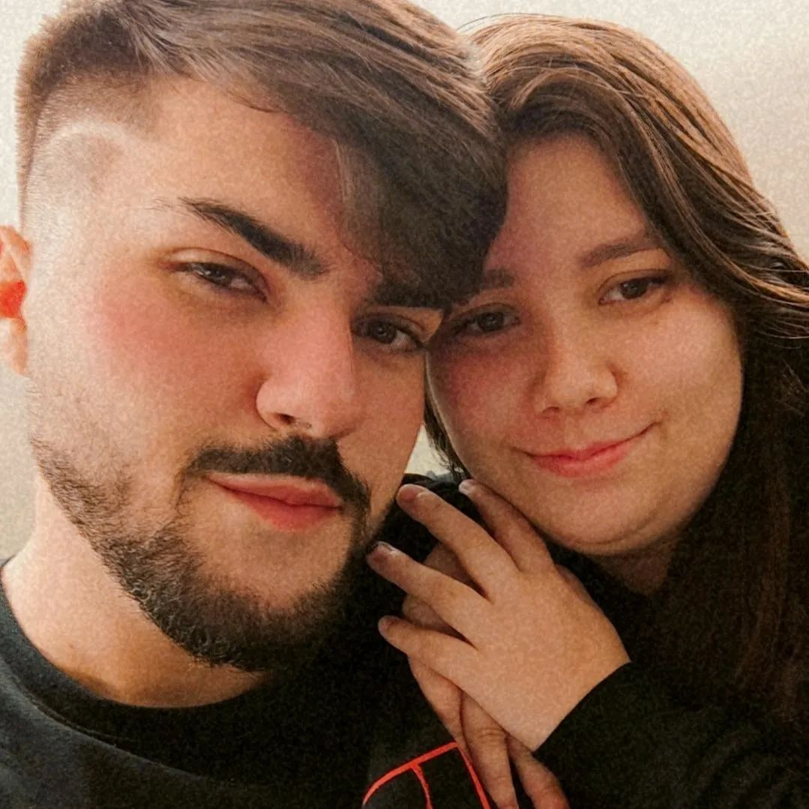
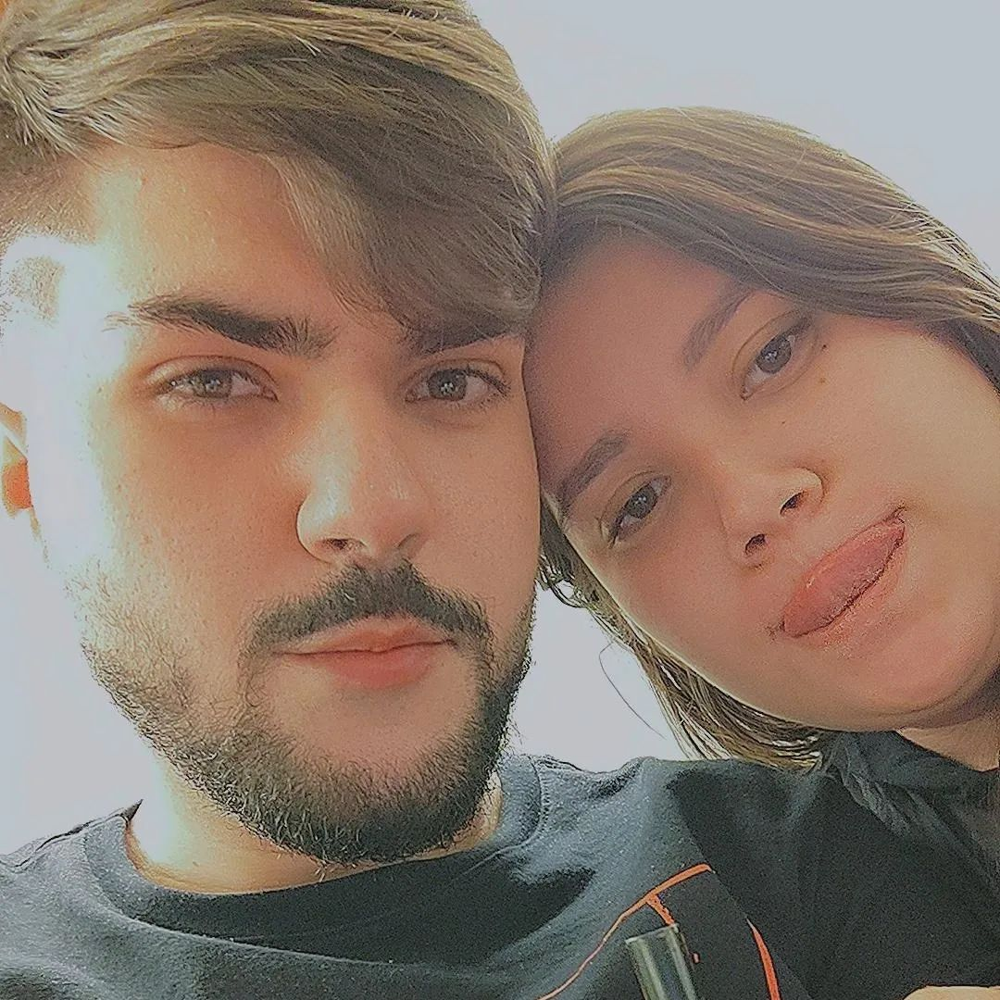
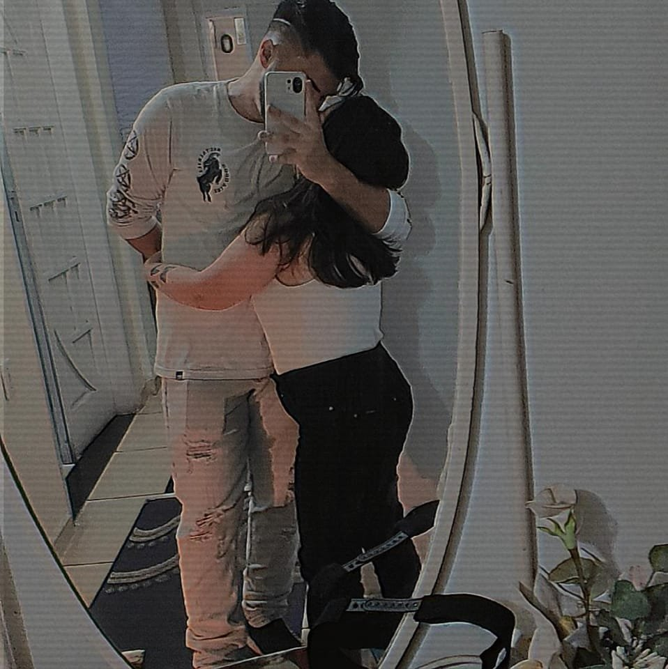
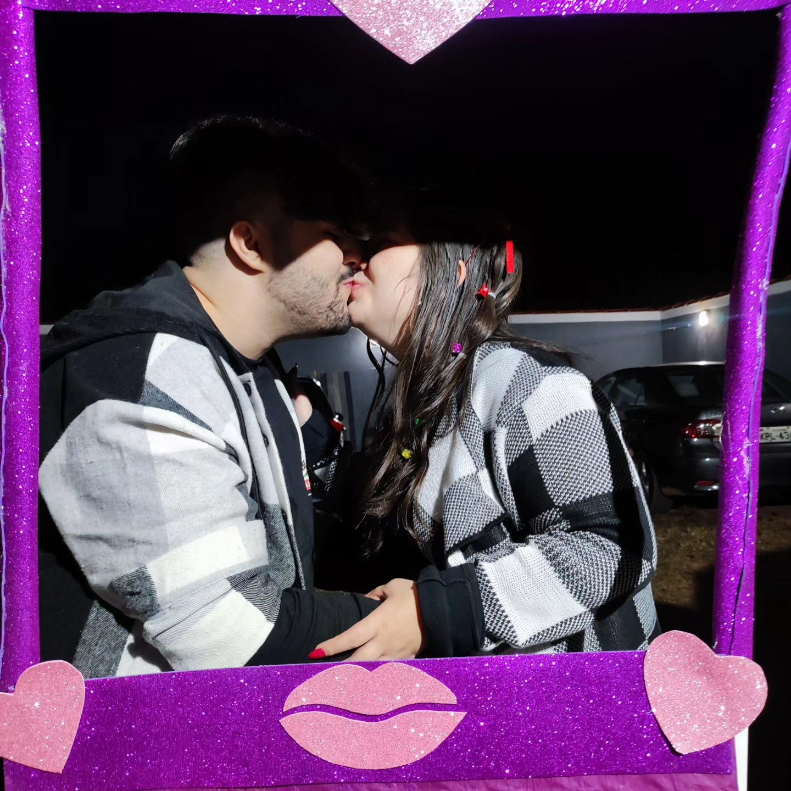
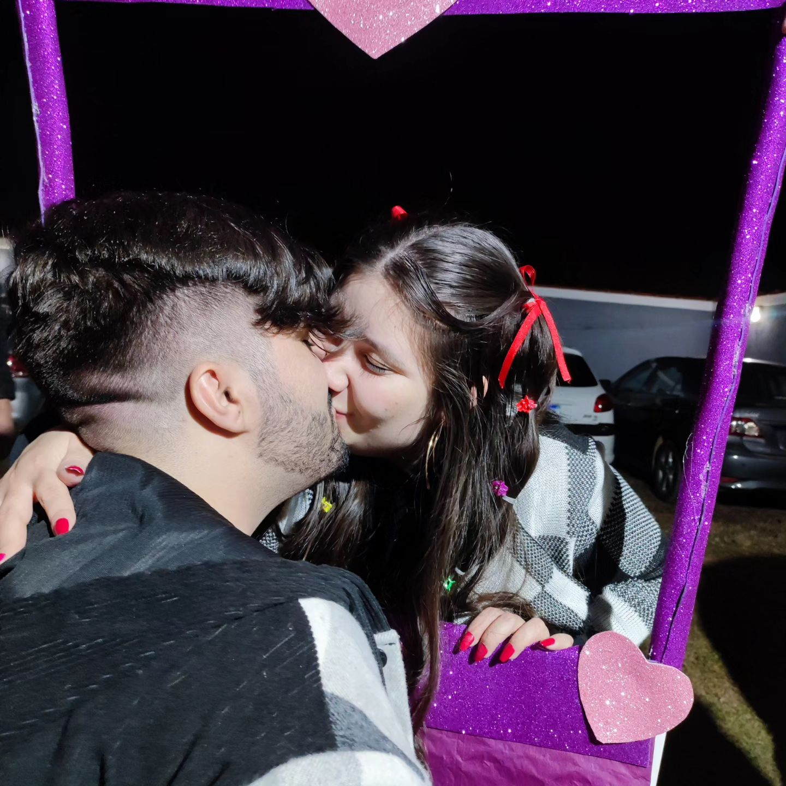
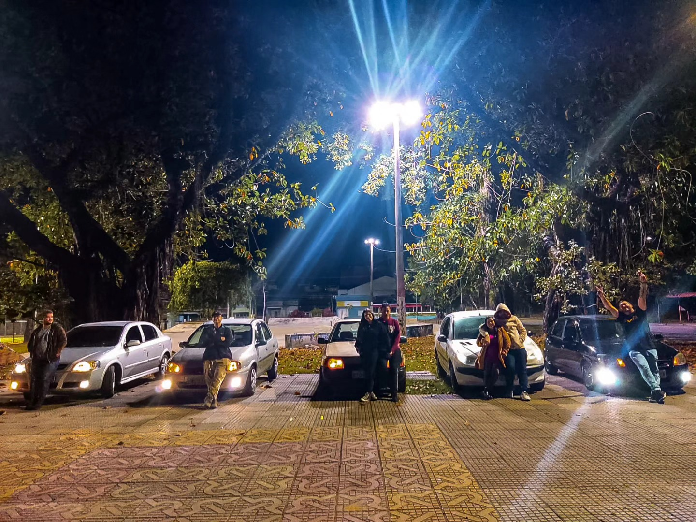
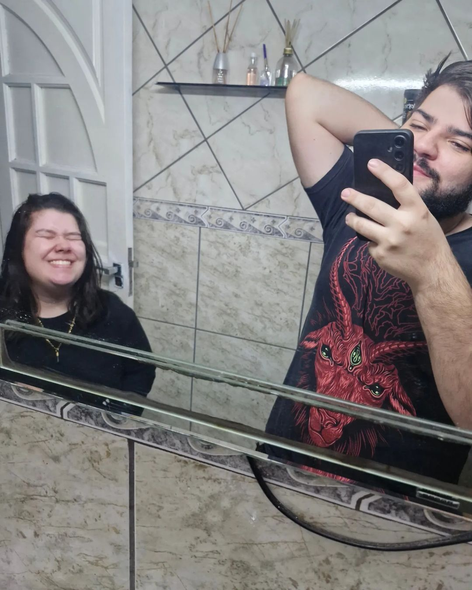
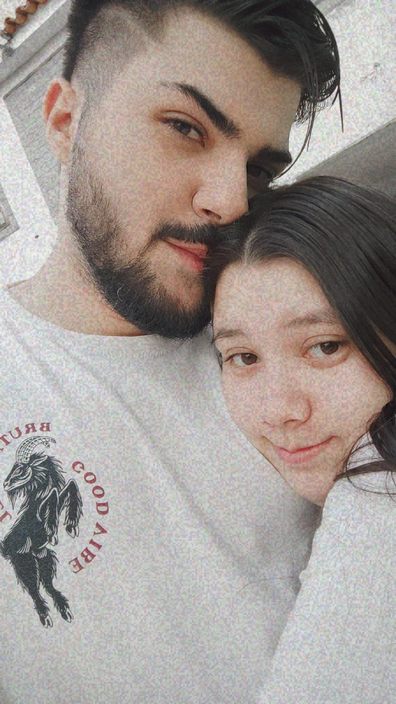
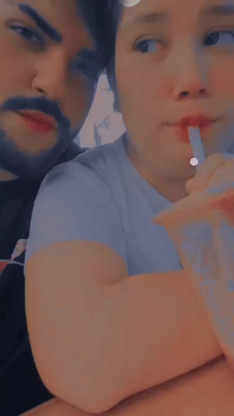

Primeiras Fotinhas




Os primeiros momentos juntos foram mágicos, como se estivéssemos vivendo tudo aquilo que deixamos para trás na nossa adolescência. Queríamos aproveitar cada instante, como se o tempo finalmente estivesse ao nosso favor.
Festinha Junina


Nossa primeira festinha junina juntos foi um caos, mas um caos delicioso! Entre as bebidinhas e as comidinhas gostosas, rimos tanto, dançamos, escutamos musiquinhas mesmo achando a banda um pouco chata (ERA A BANDA DO DONO DA FESTA, KKK). Mas com você ao meu lado, tudo se tornou muito divertido! 😊
Blacklist

Aqui seu pesadelo automotivo começou, o seu babys ficou viciado no mundo automotivo e decidiu montar um grupo com os amigos para se divertir e se encontrar uma vez por semana para jogar conversa fora e acelerar um pouco!!! AINDA ESTÁVAMOS COM NOSSO PEUGEOTZINHO BRANCO
Boiolinhas!



Desde o começo do nosso namoro, sempre fomos boiolinhas um com o outro. Mas neste último ano, temos sido ainda mais boiolinhas juntos. Cada momento é tão gostoso ao seu lado! 🏳️🌈
09/10/2024
Cara Thais Harume,
Já se passaram 2 anos repletos de momentos felizes, lembranças incríveis e algumas desavenças, o que é completamente normal em um relacionamento. O importante é que sempre superamos tudo com muito amor e compreensão. Se alguém me dissesse, há alguns anos, que ficaríamos juntos, eu não acreditaria. Mal sabia eu que, após algum tempo, estaria completamente apaixonado por você. No dia 09/10/2022, tomei a melhor decisão da minha vida. A cada dia que passo ao seu lado, mais certeza tenho de que fiz a escolha certa. Reconheço que não sou um namorado fácil, tenho meus demônios internos, mas mesmo assim, você continua me amando do jeito que sou. Estou ansioso para passar a minha vida inteira ao seu lado. Eu te amo, te amei no ano passado, te amei ontem, eu te amo hoje e com toda certeza continuarei te amando! Feliz 2 anos de namoro! ❣❣